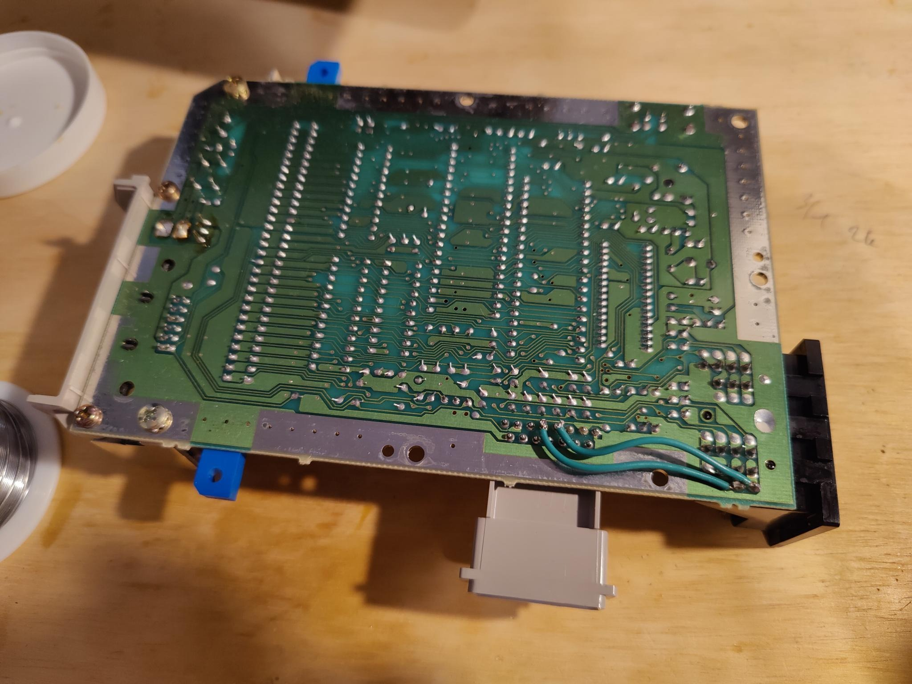
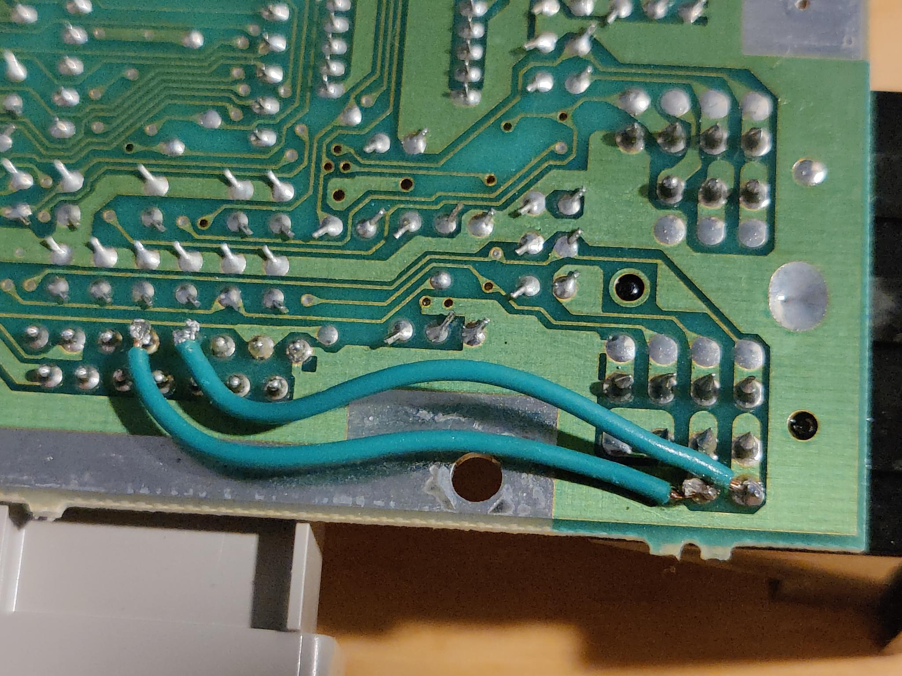

Famicom Zapper Compatibility Mod
This mod is extremely simple to do, which is why I didn't even hesitate to do it, despite my limited lightgun usage. This mod allows AV Famicom systems to detect the NES zapper from the controller socket, as the Famicom lightgun used the expansion port on the side of the console instead.
I would definitely recommend this mod for beginners. It's extremely easy to do, and it only requires two wires. I never use my lightgun, but this mod was a "why not" scenario. It was good practice for when I was starting out.
The details for the mod can be found here. Below are images of my mod install.
 